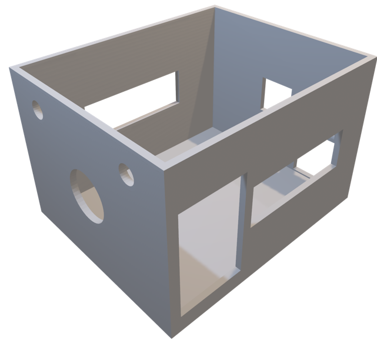

Made by 장남우, 윤예준, 송성재, 윤서준
시각장애인들은 앞이 보이지 않는 관계로 타 장애인보다 행동의 제약이 많습니다. 특히 버스를 승차하시려는 경우 시각장애인들은 자신들이 탑승해야 할 버스가 도착했는지 알 수 없습니다. 그래서 본 발명은 시각장애인들께 승차하고자 하시는 버스가 도착했음을 알려드리기 위한 목적으로 고안되었습니다.

실제로 이러한 아이디어들이 몇몇 지역에서 나와서 실사용되고 있습니다. 또한, 버스 탑승 정보를 시각장애인 분들께 알려주는 시스템이나 장치가 "시각장애인용 승차 도움 시스템"이라는 명칭으로 불리기도 합니다. 이런 시스템은 버스 정류장에 설치된 송수신 장치나 스마트폰 앱을 통해 동작합니다. 정보는 음성으로 전달되어 시각장애인 분들이 버스를 놓치지 않도록 도와드릴 수 있습니다. 이러한 시스템들은 시각장애인 분들의 이동을 더욱 편리하게 해드리기 위해 개발되었습니다.
다른 발명품들은 버스가 도착했다는 것을 알리는 데 8초 정도의 딜레이가 생겨 시각장애인 분들이 정확한 도착 시간을 특정하기 어려웠지만, 그 단점을 보완하여 카메라에 포착되는 즉시 알림을 울리게 하였습니다. 또한 대부분의 가격이 상당히 비싼 반면, 쉽게 구할 수 있는 재료를 사용하여 가격을 대폭 낮추었습니다.
본 발명은 무선 통신을 이용하여 시각장애인 분들께 버스의 도착을 알려주는 장치와 관련되어 있으며, 멀리 이동해야 할 경우에 도움을 드릴 수 있습니다. 현재 일부 정류장에는 도착 예정 버스를 모니터로 표시해주는 시스템이 시범적으로 운영되고 있지만, 음성 정보는 제공되지 않고 있으며, 제공된다 해도 특정 버스에 대한 정보만 출력되지 않아 혼란을 줄 수 있습니다. 그 결과, 현재 버스를 이용하시려는 시각장애인 분들은 주변 사람들의 도움 없이는 자신이 타야 할 버스가 도착했는지 알기 어렵습니다. 무관심하거나 도움을 요청받은 사람이 떠나버리면 다시 도움을 요청해야 하는 상황에서, 버스 이용 시 불편함은 상당히 크다고 할 수 있습니다. 이 발명은 카메라와 스피커, 머신러닝 시스템으로 구성되어 정류장마다 설치되며, 버스가 정류장에 정차할 경우 번호를 분석하여 음성으로 알려주는 방식으로 되어 있습니다. 다량의 버스가 같은 라인에 정차할 경우 어느 버스가 어느 라인에 정차했는지 분석하여 알려주는 시스템도 마련되어 있습니다.